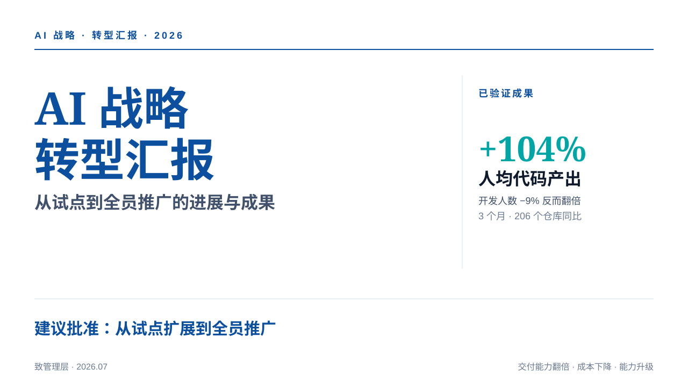
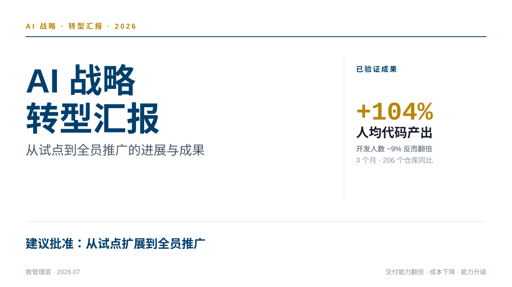
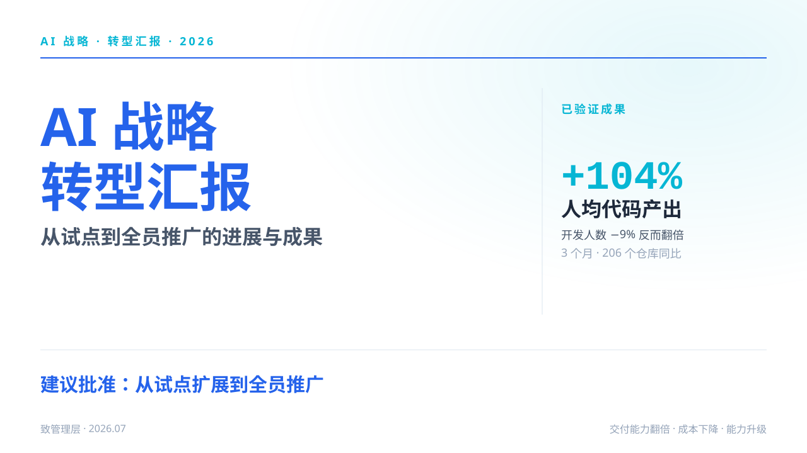
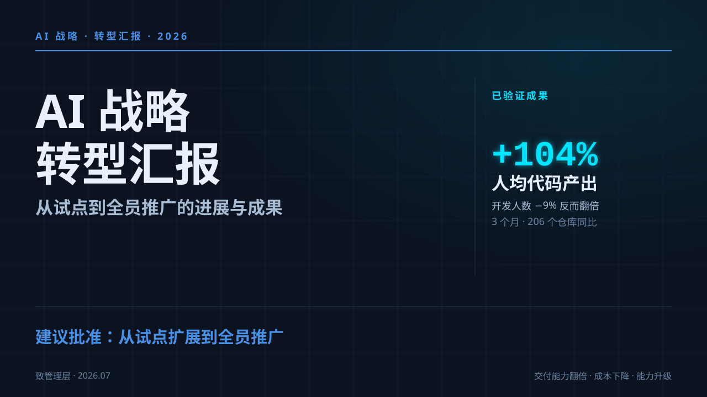
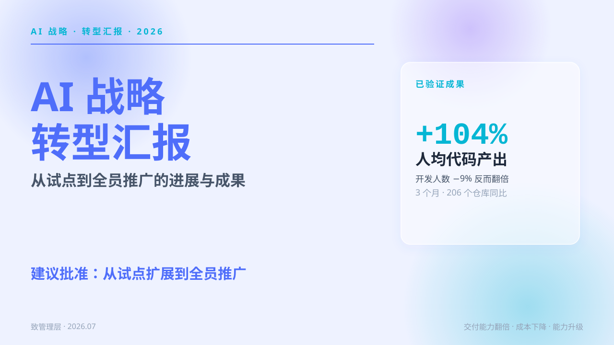
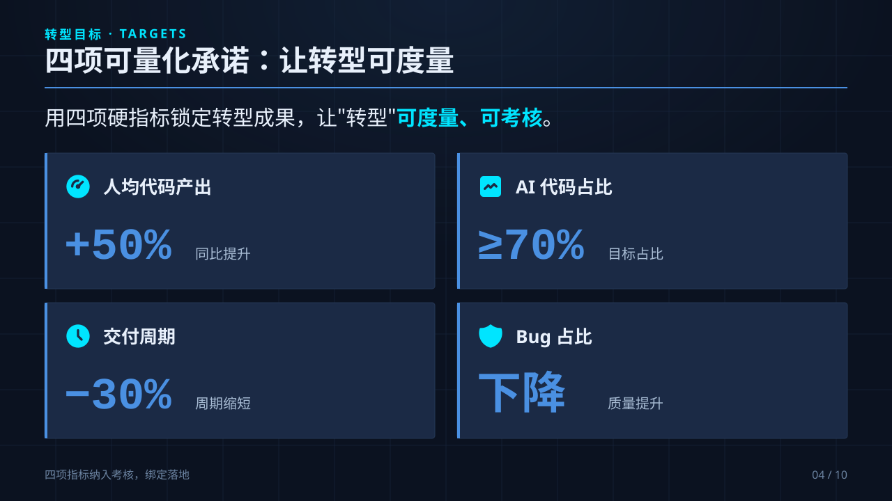
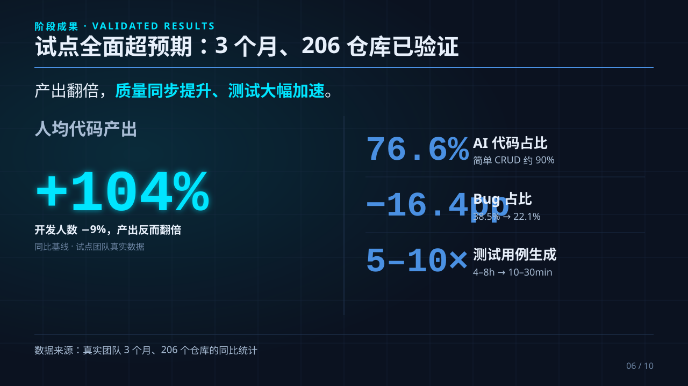
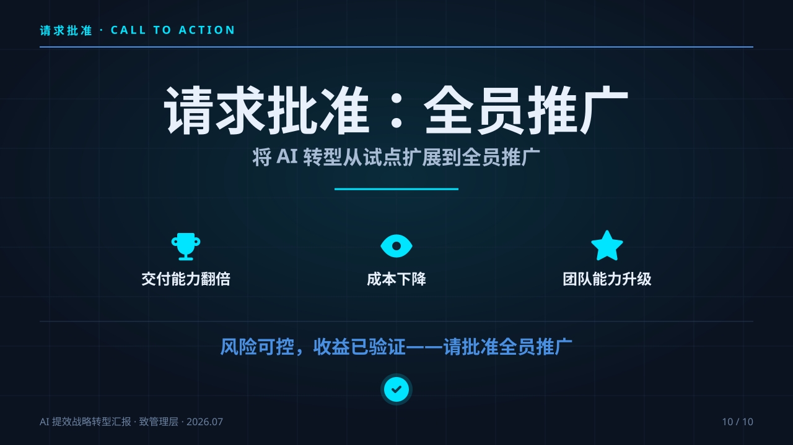

汇报材料 AI 生成指南
转型最大的痛点不是技术，是「向上汇报、向下推进」。本模块给一套 Prompt 模板包，让 AI 帮你生成汇报材料。
汇报材料 = 数据 + Prompt + AI。你准备数据 → 复制本模块的 Prompt 模板 → 喂给任意 AI → 生成汇报（PPT/计划书/周报/总结/度量报告）。不是空白模板，是「AI 可执行的 Prompt 包」——这才是可复制的关键。
一、为什么：汇报是真痛点
AI 转型最大的阻力，往往不是技术，而是：
- 向上：怎么向上级说明转型价值、怎么汇报进展、怎么争取资源？
- 向下：怎么给各级人员讲清楚「该做什么」？
- 横向：怎么让各部门协同、怎么交接？
这些汇报/沟通材料，占管理者大量精力。本模块把这些材料的生成交给 AI——你只需准备数据，AI 按模板生成。
二、新手怎么用：5 步手把手
整体流程一句话：数据 → Prompt → AI → Markdown → 渲染。下面把每一步拆开，照着做就能出你的第一份汇报。
| 步骤 | 动作 | 产出 |
|---|---|---|
| ① 准备数据 | 从 JIRA / Git / 研发系统捞你的真实数据 | 数据清单 |
| ② 复制 Prompt | 打开 .prompt.md，复制 Prompt 段 | 原始 Prompt |
| ③ 填占位 | 把 [方括号] 替换成你的数据 | 填好的 Prompt |
| ④ 发给 AI | 粘贴到任意 AI（Claude / ChatGPT / GLM） | 汇报内容（Markdown） |
| ⑤ 渲染 | PPT 类 → ppt-master / 公司模板；文档类 → 直接用 | 最终汇报材料 |
Step 1 · 数据从哪来
prompt 里要的数据，企业自己都有，从这几个地方捞：
| 要的数据 | 去哪找 |
|---|---|
| 现状痛点（交付周期 / 积压需求） | JIRA / 研发管理系统 / 项目周报 |
| 重复劳动占比 | Git 提交统计 / 代码类型估摸 |
| Bug 率 / 质量数据 | Bug 跟踪系统（JIRA / 禅道） |
| 转型目标 | 与上级/组织对齐的 OKR / 自己拟定 |
| 行业参考 | 公开报告（如 GitHub 开发者效率研究），必须记出处 |
Step 2 · 复制 prompt
打开对应的 .prompt.md（如 01-战略汇报PPT.prompt.md），找到 ## Prompt 那节，复制 ``` 三个反引号里面的整段（从「你是一位…」到「请直接输出…」）。
Step 3 · 填占位
把 prompt 里所有 [方括号占位] 替换成你的真实数据：
- 现状痛点（启动版用）：[填企业自己的真实数据]
↓ 改成
- 现状痛点（启动版用）：需求交付周期 28 天，重复代码约 40%，Bug 占比 22%填不出的占位可以删那行或写「暂无」。启动版（阶段 1）不要填 +104% 这种还没跑出来的验证数据。
Step 4 · 发给 AI
| AI | 适合 | 怎么用 |
|---|---|---|
| Claude（claude.ai）/ ChatGPT | 复杂汇报（计划书 / 总结 / 战略 PPT） | 新建对话，粘贴填好的 prompt，回车 |
| Kimi / 通义 / GLM | 国内可直接用，免费够用 | 同上 |
| Claude Code（终端） | 想顺手生成可编辑 PPT | 粘贴 prompt 生成内容，再直接接 ppt-master |
一轮不满意，就追问「把第二节的表格再细化」「目标再加一条」之类，多轮调到满意。
Step 5 · 拿到 Markdown → 渲染
AI 输出的是 Markdown 文本。文档类（计划书 / 周报 / 总结 / 度量报告）直接复制到飞书 / Word / Typora 用，或转 PDF；PPT 类（战略汇报）见第四节渲染成 PPT。
三、5 类汇报 Prompt
完整 Prompt 包在 demos/report-templates/（可单独交付）：
| 模板 | 用途 | 输出 |
|---|---|---|
| 01 战略汇报 PPT | 要资源 / 汇报进展（启动版无验证数据 · 成果版有验证数据） | 可编辑 PPTX |
| 02 转型计划书 | 立项审批 | 文档 |
| 03 周报 | 关键节点跟踪 | 文档 |
| 04 阶段总结报告 | 结项 / 晋升述职 | 文档 |
| 05 效果度量报告 | 数据证明提效（接 ai-metrics） | 文档 |
四、PPT 渲染：ppt-master（原生可编辑 PPTX）
用 ppt-master（GitHub 开源，MIT）——把 AI 生成的汇报内容（Markdown）生成原生可编辑的 PPTX，不用手画。在 Claude Code 里通过 @hugohe3/ppt-master 引用即可。
# 安装 ppt-master
git clone https://github.com/hugohe3/ppt-master.git
cd ppt-master
pip install -r requirements.txt
# 用法（在 Claude Code 里）：引用 ppt-master，让它把汇报内容生成 PPT
# 1. 用本模块 Prompt 生成汇报内容（Markdown）
# 2. Claude Code 里 @hugohe3/ppt-master，说「用这份战略汇报内容生成 PPT」
# 3. AI 按 SKILL.md 工作流，生成原生可编辑 .pptxpython-pptx 生成原生 DrawingML——形状 / 文本框 / 图表 / 动画都是独立可编辑元素，PowerPoint 里能改每个细节，不是图片式。更多示例见 ppt-master 的 examples/ 目录（20+ 精美可编辑 deck）。五、示例：战略汇报 PPT（启动版 vs 成果版）
启动版示例（阶段 1，全程无验证数据），用 ppt-master 生成原生可编辑 PPTX 后包含：
- 封面：AI 战略转型汇报（立项）
- 现状痛点：交付周期、重复劳动占比、Bug 率（企业自己的真实数据）
- 转型目标：人均产出 +50%、AI 占比 ≥70%、周期 -30%（表格，标「目标值」）
- 验证路径：先 1-2 组试点 3 个月 → 度量验证 → 再推广
- 资源请求：工具预算 / 培训 / 人力 / 考核
成果版示例（阶段 5，跑完度量才有）：
- 转型目标 vs 实测达成：人均产出 +104%、AI 占比 76.6%、Bug -16.4pp（关键数字高亮，标注口径 +「相关性≠因果」）
完整 deck 示例见 ppt-master 的 examples/ 目录（20+ 精美可编辑 deck，PowerPoint 里每个元素可改）。
六、PPT 效果展示：ppt-master 实际生成
下面是 ppt-master 用同一份战略汇报内容（成果版）实际生成的 PPT——全部原生可编辑（文字是文本框，PowerPoint 里可直接改字；不是图片式）。
同一份内容，5 种风格（换主题即可，内容不动）





darktech 风格内页（原生可编辑，文字可直接改）



七、完整演练：一份假数据从头走一遍
假设你是某公司研发组长，要立项 AI 转型。照下面 7 步走，出你的第一份战略汇报：
- 选模板：立项要资源 → 用 01 战略汇报 PPT · 启动版
- 捞数据（JIRA / 禅道 / Git）：交付周期 28 天、Bug 22%、重复代码 40%；目标定 人均 +50% / AI 占比 ≥70%
- 复制 prompt：打开 01，复制
## Prompt段 - 填占位：[现状痛点] 换成上面的数据；[汇报场景] 填「启动版」；[行业参考] 填一条带出处的公开研究
- 发给 AI：粘贴到 Claude，得到《AI 战略转型汇报》Markdown（大致就是 01 里「启动版示例」的样子）
- 渲染 PPT：存成
.md，在 Claude Code 里@hugohe3/ppt-master，生成原生可编辑 PPTX - 拿去汇报：讲清 现状 → 目标 → 试点计划 → 资源需求；3 个月后用真实数据回来做成果版
看懂了吗：你不需要会写 prompt、不需要会画画、不需要 +104% 这种别人家的数据——只要会捞自己公司的数据 + 复制粘贴，AI 帮你生成内容，工具帮你渲染 PPT。这就是「Prompt 包」的价值。
八、与其他模块的衔接
- 战略目标数据来自 阶段 1 战略启动
- 度量数据（AI 占比/产出/Bug）来自 阶段 5 推广度量 + ai-metrics demo
- 转型方法论（6 阶段）贯穿 总纲 ~ 阶段 6
关键：本模块交付的是「Prompt 包」（内容资产，可单独卖），不是工具。读者用任意 AI + Prompt → 生成，工具（ppt-master）只是可选渲染层。这是教程最大卖点之一——别人卖方法论，你卖「拿着就能生成汇报的 Prompt 包」。